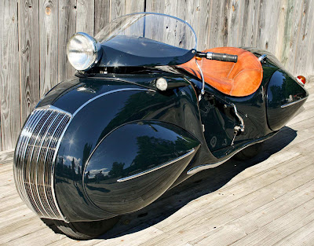
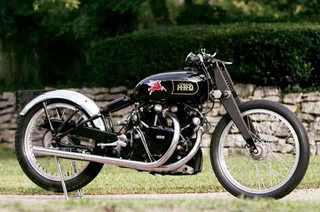
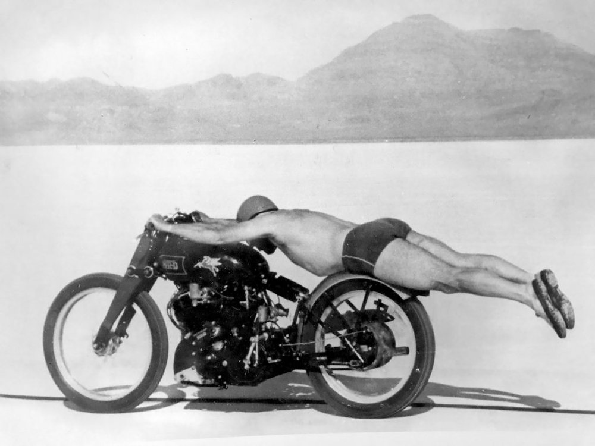

O universo dos veículos antigos constitui um rico acervo de histórias
fascinantes, muitas das quais permanecem desconhecidas. Segredos, lendas e
curiosidades nos auxiliam na compreensão da evolução da indústria
automobilística e do impacto que os veículos exerceram em nossa sociedade.
Carros antigos
O Cadillac V-16 – A Obra-Prima da Grande Depressão
Durante a Grande Depressão, a General Motors lançou o Cadillac V-16, um
automóvel de luxo equipado com um motor de 16 cilindros, representava o
ápice da sofisticação automotiva. Cada motor era feito manualmente e o
veículo era surpreendentemente silencioso e suave. Apesar de sua
imponência e sofisticação, o V-16 não obteve sucesso de vendas devido à
crise econômica. Sua produção foi descontinuada, e sua história,
parcialmente apagada.
Tucker 48 – O Carro Inovador Sabotado
Em 1948, Preston Tucker apresentou o inovador Tucker 48, um automóvel com
recursos como faróis que acompanhavam o movimento do volante e uma
estrutura de proteção para os passageiros. Apesar do design visionário, o
projeto foi alvo de controvérsias e acusações de fraude, levando à
falência da empresa. Especula-se que a concorrência tenha influenciado a
interrupção da produção, resultando na fabricação de apenas 51 unidades e
na transformação do modelo em uma lenda entre colecionadores.
O Carro a Vapor Doble – Superando o Gasolina nos Anos 1920
Na década de 1920, em um mercado dominado por automóveis a gasolina, a
Doble Steam Motors Corporation lançou o Doble E-20, um veículo a vapor com
ignição imediata, contrastando com os modelos da época que exigiam um
aquecimento de aproximadamente 30 minutos. Dotado de torque elevado, o
E-20 atingia 100 km/h em cerca de 10 segundos, um desempenho notável para
a época. Adicionalmente, o veículo se destacava pela operação silenciosa
e ausência de necessidade de troca de marchas. No entanto, seu custo
elevado e complexidade de fabricação restringiram sua produção. Apesar
de sua tecnologia inovadora, o Doble E-20 não prosperou, sendo suplantado
pelos motores a gasolina.
Motos antigas
A Henderson Streamline – A Moto Perdida da Era Art Deco
Na década de 1930, a Henderson apresentou a Streamline (ou "KJ"), uma
motocicleta notável, criada pelo engenheiro Orley Ray Courtney. Inspirada
na estética futurista da Art Deco e nas formas aerodinâmicas de carros e
trens da época, a Henderson Streamline se destacava como uma obra-prima do
design. Equipada com um motor de quatro cilindros e carenagem totalmente
integrada, uma característica incomum para o período, sua produção foi
extremamente limitada e dispendiosa. Atualmente, poucos exemplares da
Streamline permanecem, tornando-a um dos projetos de motocicletas mais
notáveis e, paradoxalmente, um dos menos conhecidos entre os entusiastas.

HENDERSON STREAMLINE - 1930
A Vincent Black Shadow – A Morte Misteriosa de Rollie Free
A Vincent Black Shadow, reconhecida como uma das motocicletas mais
velozes da década de 1940, possui uma história marcada por um contraste
entre o sucesso nas pistas e um trágico fim. Rollie Free, piloto de testes
renomado, estabeleceu recordes de velocidade icônicos a bordo de uma
Black Shadow, deitado sobre a motocicleta em traje de banho, uma imagem
que se tornou um símbolo de sua ousadia. Anos mais tarde, Free faleceu em
um acidente de motocicleta em circunstâncias misteriosas, levantando a
hipótese de que estaria tentando superar seu próprio recorde. As causas do
acidente, no entanto, nunca foram totalmente esclarecidas, deixando um
legado de mistério em torno de sua morte.

VINCENT BLACK SAHDOW - 1948

PILOTO ROLAND ROLLIE FREE - 1948
A Moto de Guerra Harley-Davidson XA – O Projeto Secreto
Durante a Segunda Guerra Mundial, a Harley-Davidson desenvolveu
secretamente a XA, uma motocicleta militar inovadora, inspirada nas BMW
R71 utilizadas pelo exército alemão. Equipada com um motor boxer de dois
cilindros opostos e transmissão por eixo, uma inovação para a
Harley-Davidson, a XA foi projetada para operar em condições desérticas,
onde as motocicletas tradicionais apresentavam dificuldades. Apesar de sua
eficiência e tecnologia avançada, a guerra terminou antes que a XA
pudesse ser amplamente utilizada, resultando no abandono do projeto.
Apenas cerca de mil unidades foram construídas, e sua existência
permanece desconhecida para muitos entusiastas.
Em cada ronco de motor, em cada curva sinuosa, há um universo de histórias
não contadas, lendas urbanas e segredos de design que desafiam nossa
imaginação. A presente seleção de histórias destaca modelos que, em sua
época, introduziram inovações e estabeleceram tendências que permanecem
relevantes.
Agradecemos a sua leitura e convidamos você a compartilhar este conteúdo
com seus contatos que apreciam carros e motos antigas.